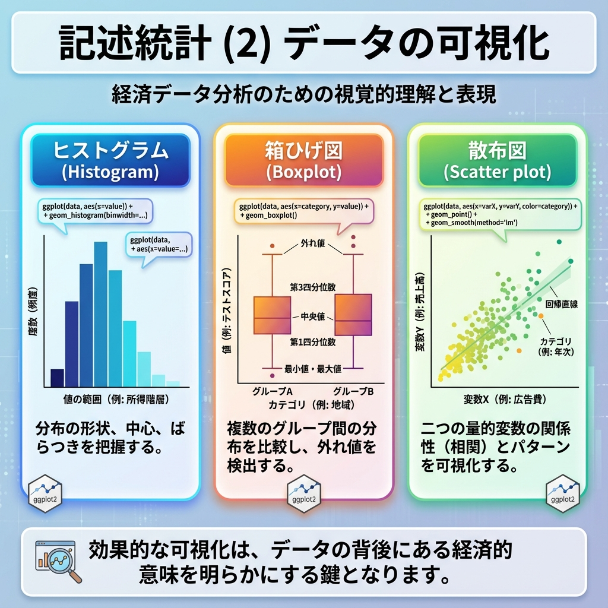
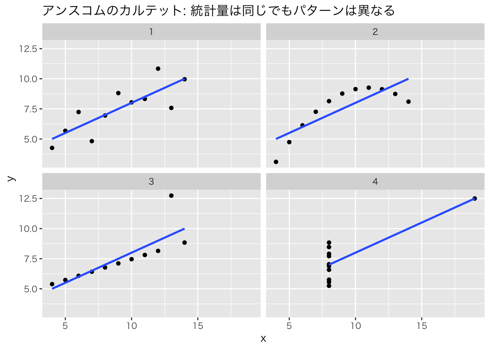
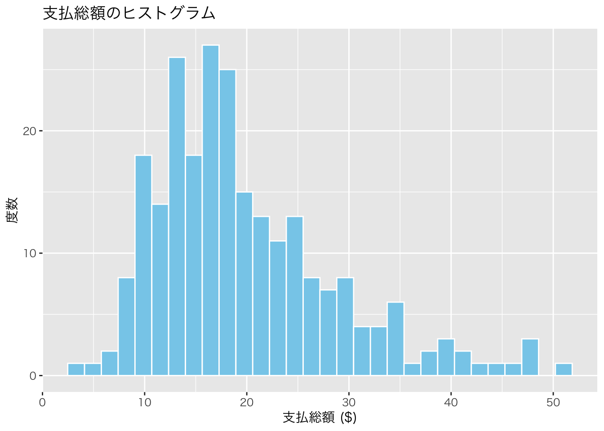
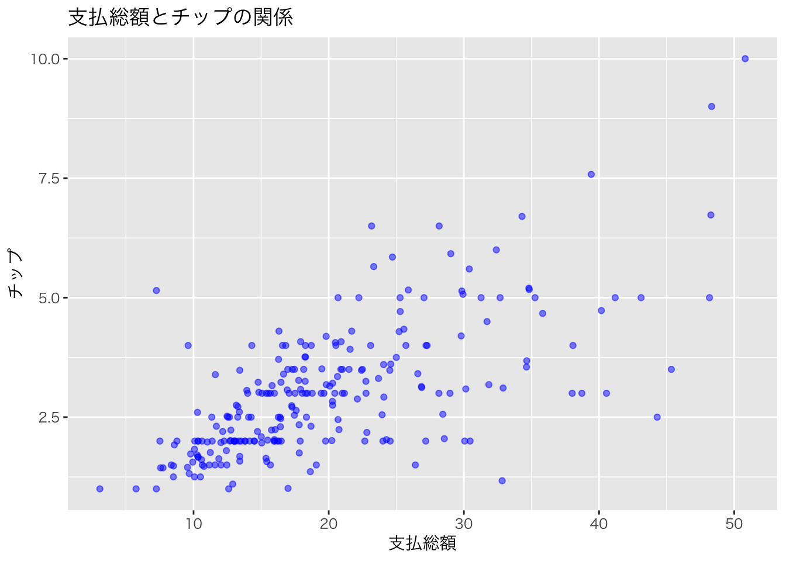
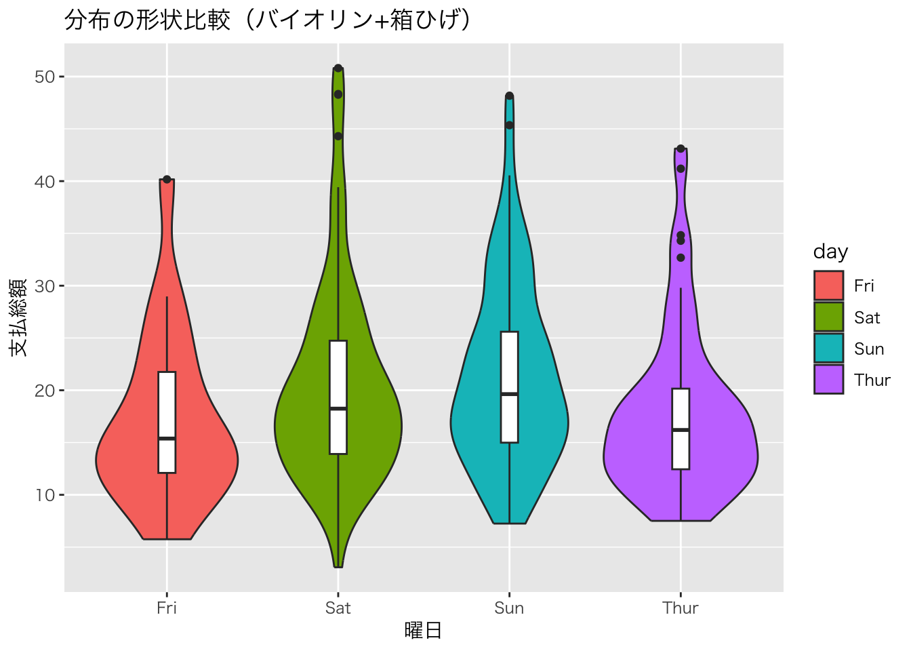
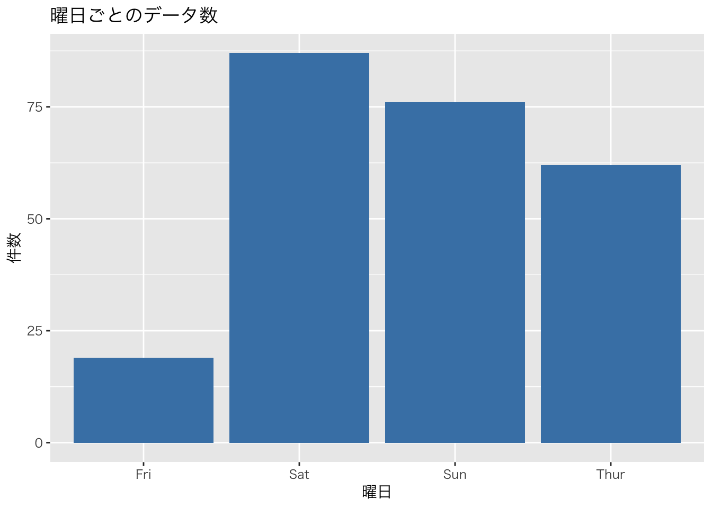
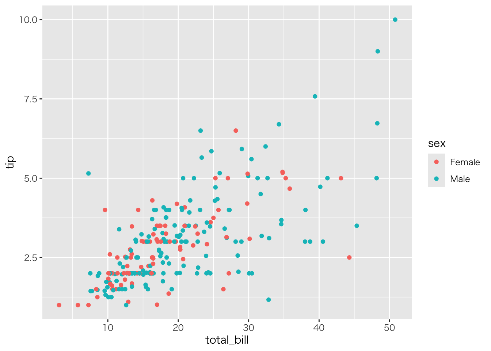
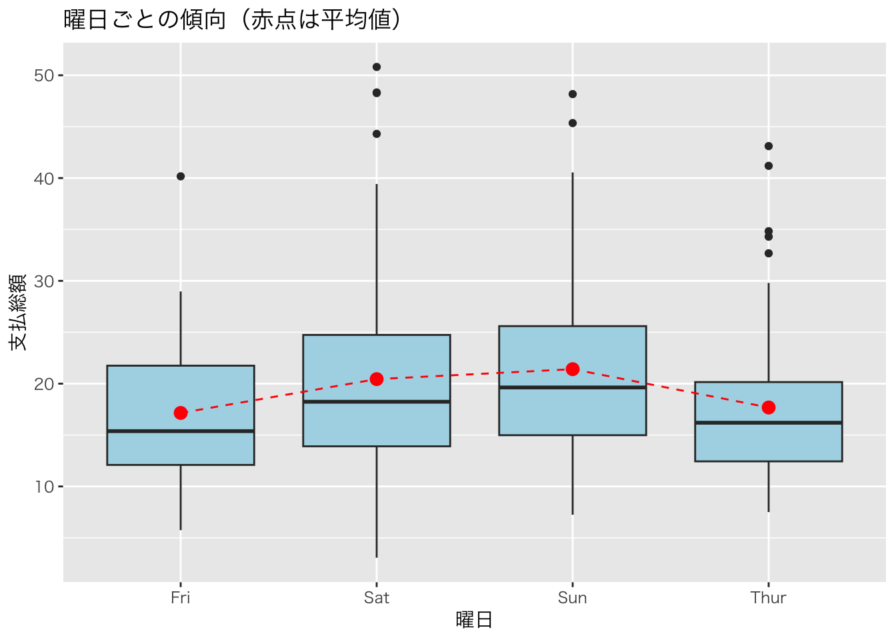

library(tidyverse)
# Rに標準で入っている anscombe データを整形
anscombe_long <- anscombe %>%
pivot_longer(everything(),
names_to = c(".value", "set"),
names_pattern = "(.)(.)")
# 統計量を確認：どれもほぼ同じ
anscombe_long %>%
group_by(set) %>%
summarize(
mean_x = mean(x), mean_y = mean(y),
sd_x = sd(x), sd_y = sd(y),
cor = cor(x, y)
)第4回 記述統計 (2) データの可視化

要約の限界と「アンスコムの警鐘」
前節では、膨大なデータを「平均値」や「分散」などの数値に縮約し、全体の特徴を掴みました。 しかし、縮約には副作用があります。「形の消失」です。
Anscombe (1973) の有名な例、アンスコムのカルテットを見てみましょう。 一見、平均値も分散も相関係数もしっかり一致している4つのデータセットです。
数値だけなら「これらは同じ性質のデータだ」と結論づけてしまうでしょう。でも、グラフにして可視化した瞬間、景色は一変します。 [対象注意: 日本語フォント設定は環境依存あり]
ggplot(anscombe_long, aes(x = x, y = y)) +
theme_gray(base_family = "HiraKakuProN-W3") + # [対象注意] Mac用設定
geom_point() +
geom_smooth(method = "lm", se = FALSE) +
facet_wrap(~set) +
labs(title = "数値は嘘をつかないが、真実を語るとは限らない")
きれいな直線、曲線、外れ値の影響…。数値要約で捨て去られた情報が、可視化ではっきりと浮かび上がりました。 データ分析において、可視化は分析の「後」の飾りではありません。分析の「最初」に行うべき、欠かせない診断です。
準備
本節でも tips データセット（Bryant & Smith, 1995）を使います。
url <- "https://raw.githubusercontent.com/mwaskom/seaborn-data/master/tips.csv"
tips <- read_csv(url)キャンバスに層を重ねる：ggplot2の思想
Rの可視化パッケージ ggplot2 の設計思想は、Wickham (2010) の “Layered Grammar of Graphics”（グラフィックスの層状文法）に基づいています。 Excelみたいに「棒グラフを作るボタン」があるわけではありません。
「データ」という土台に、「座標」を定義し、「点や棒（Geom）」を乗せ、「説明（Labels）」を加える。
この工程をコードで書きます。
ggplot(data = tips, mapping = aes(x = total_bill, y = tip)) + # キャンバスと座標
geom_point() # 何を描くか（点）1. 分布の形状を見る
まずは、データが「どんな形」をしているか確認します。
山の形を知る：ヒストグラム
連続した数値データ（金額など）が、どこに集まっているかを見に行きます。 山は一つか、二つか？ 左右対称か、歪んでいるか？
ggplot(tips, aes(x = total_bill)) +
theme_gray(base_family = "HiraKakuProN-W3") + # [対象注意] Mac用設定
geom_histogram(bins = 30, fill = "skyblue", color = "white") +
labs(title = "支払総額の分布", x = "支払総額 ($)", y = "度数")
構造を要約する：箱ひげ図
ヒストグラムは詳細ですが、複数のグループ比較には不向きです。重なって見づらいから。 そこで箱ひげ図の出番です。分布の情報を「箱」と「ひげ」に要約します。
ggplot(tips, aes(x = day, y = total_bill, fill = day)) +
theme_gray(base_family = "HiraKakuProN-W3") + # [対象注意] Mac用設定
geom_boxplot() +
labs(title = "曜日ごとの支払額の違い", x = "曜日", y = "支払総額")
Tukeyの箱ひげ図の定義:
- 箱: データの中央50%（第1四分位数〜第3四分位数）。この中に「普通」のデータが入ります。
- 太線: 中央値（Median）。
- 点: 箱から
1.5倍の四分位範囲以上離れた値。統計的な「外れ値候補」として扱います。
分布の機微を見る：バイオリンプロット
箱ひげ図だと「山が2つある」などの情報は消えてしまいます。分布の形状（密度）そのものを表示したい場合は、バイオリン図を使います。
ggplot(tips, aes(x = day, y = total_bill, fill = day)) +
theme_gray(base_family = "HiraKakuProN-W3") + # [対象注意] Mac用設定
geom_violin() +
geom_boxplot(width = 0.1, fill = "white") + # 箱ひげ図も重ねると最強
labs(title = "分布の形状比較（バイオリン+箱ひげ）", x = "曜日", y = "支払総額")
2. 関係性を探る
次は、2つの変数がどう関わっているかを探ります。
2つの量の相関：散布図
「たくさん食べた人は、たくさんチップを払うのか？」 2つの連続変数（横軸と縦軸）の関係をプロットします。
ggplot(tips, aes(x = total_bill, y = tip)) +
theme_gray(base_family = "HiraKakuProN-W3") + # [対象注意] Mac用設定
geom_point(color = "blue", alpha = 0.5) +
labs(title = "支払総額とチップの正の相関", x = "支払総額", y = "チップ")
ここに第3の次元（情報）を加えるのも簡単です。例えば、性別によって色を変えます（color = sex）。
ggplot(tips, aes(x = total_bill, y = tip, color = sex)) +
theme_gray(base_family = "HiraKakuProN-W3") + # [対象注意] Mac用設定
geom_point()
状況ごとの違い：ファセット分割
色分け（color）は便利ですが、情報が増えすぎると「スパゲッティ」のように絡まって読めなくなる。 そんなときは facet_wrap() でグラフ自体を分割してしまいましょう。
# 喫煙の有無 × 時間帯 で状況を分解する
ggplot(tips, aes(x = total_bill, y = tip)) +
theme_gray(base_family = "HiraKakuProN-W3") + # [対象注意] Mac用設定
geom_point(aes(color = smoker)) +
facet_wrap(~ time) +
labs(title = "条件による関係性の違い", x = "支払総額", y = "チップ")
グラフを「語らせる」ための調整
デフォルトのままでは、グラフは「下書き」です。誰かに伝えるためには、意図が伝わるよう調整します。
統計情報の重ね書き
「傾向」を見せたいなら、生のデータ点だけでなく、平均値や回帰直線を重ねるのが効果的です。
ggplot(tips, aes(x = day, y = total_bill)) +
theme_gray(base_family = "HiraKakuProN-W3") + # [対象注意] Mac用設定
geom_boxplot(fill = "lightblue") +
stat_summary(fun = mean, geom = "point", color = "red", size = 3) + # 平均値を赤点で追加
stat_summary(fun = mean, geom = "line", aes(group = 1), color = "red", linetype = "dashed") +
labs(title = "曜日ごとの傾向（赤点は平均値）", x = "曜日", y = "支払総額")
ユニバーサルデザインへの配慮
あなたのグラフを見る人の中には、特定の色が見えにくい人（色覚多様性）がいるかもしれません。 「赤と緑」の色分けだけで情報を伝えてはダメです。形状（shape）や線種（linetype）の違いを併用するか、誰もが識別しやすいカラーパレット（Viridisなど）の使用をおすすめします。
課題
自分の手で可視化を行い、データからの発見を言語化してください。
tip（チップ）の分布をヒストグラムで確認してください。何か気づく特徴はありますか？（キリの良い数字が多い、など）total_billとtipの散布図を描き、time（ランチ/ディナー）で色分けして、時間帯による傾向の違いを議論してください。
練習問題
練習1: ヒストグラムの最適化
tipのヒストグラムを作成してください。- ビンの数（
bins）を10, 30, 50と変えてみてください。分布の印象がどう変わるか観察してください。
練習2: 多変量の可視化
- 性別 (
sex) ごとのtipの分布を箱ひげ図で比較してください。女性の方がばらつきが大きいですか？ - 喫煙者 (
smoker) ごとのtotal_billの分布を、facet_wrap()を使って左右に並べて比較してください。
練習3: 散布図への情報付加
total_billとtipの散布図を作成してください。- 点の大きさを
size（人数）にマッピングしてください（aes(size = size)）。大人数のグループは右上に集まっていますか？ - 全体の傾向を示す回帰直線を
geom_smooth()で追加してください。